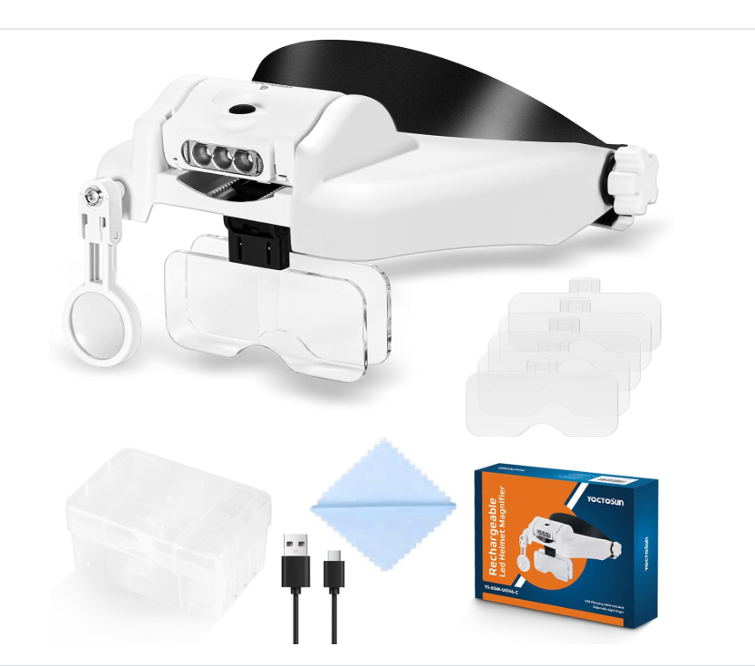
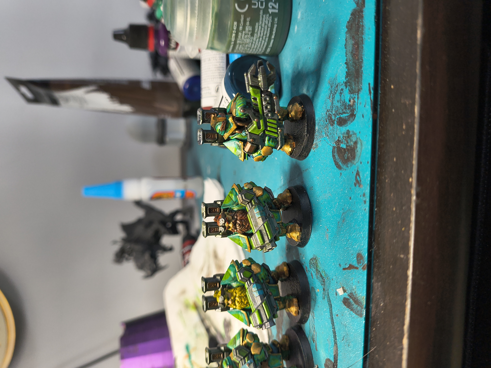
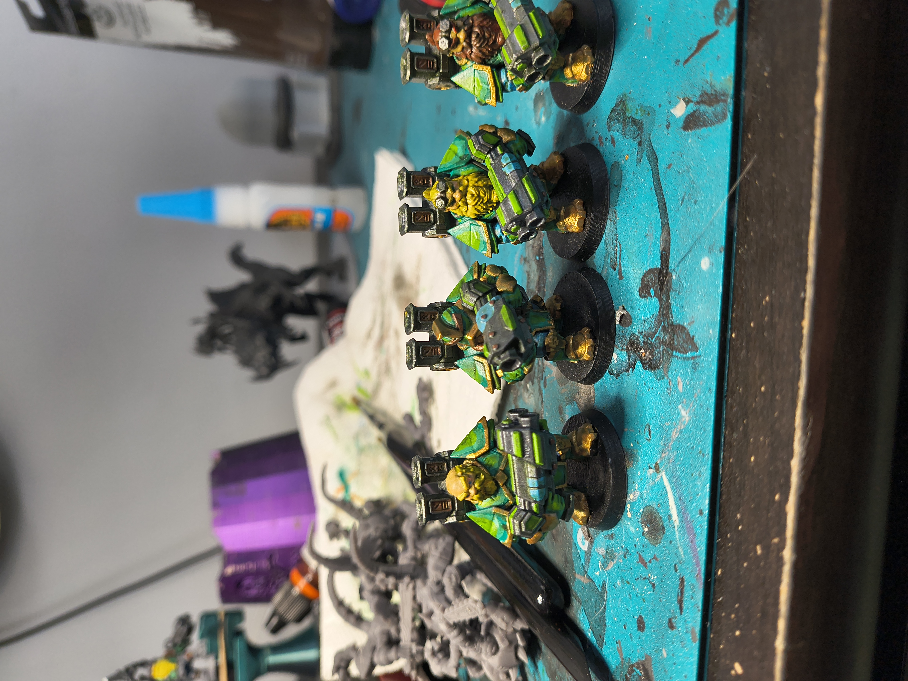
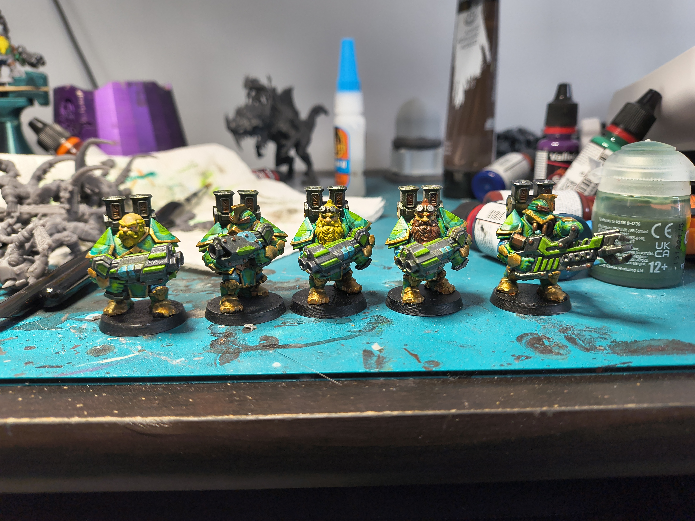
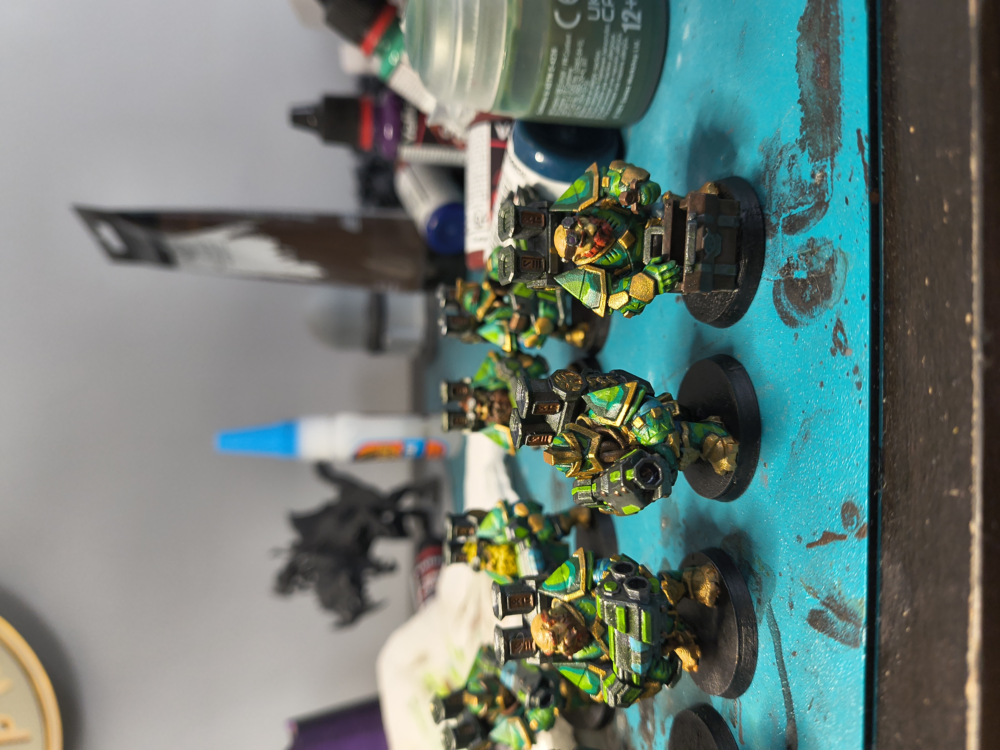
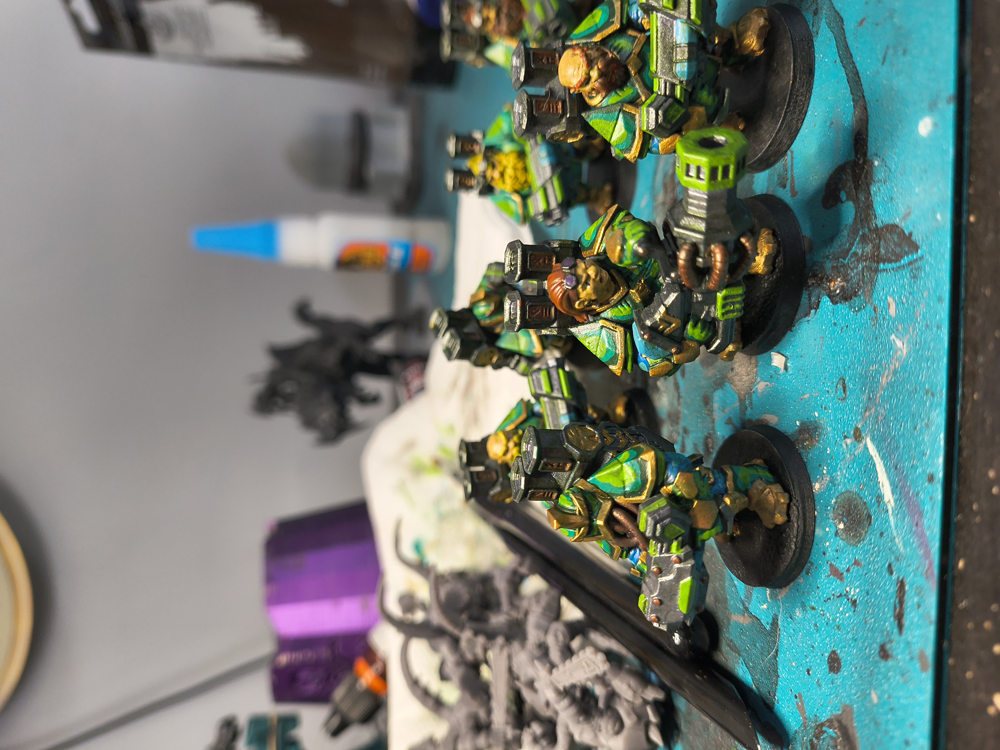
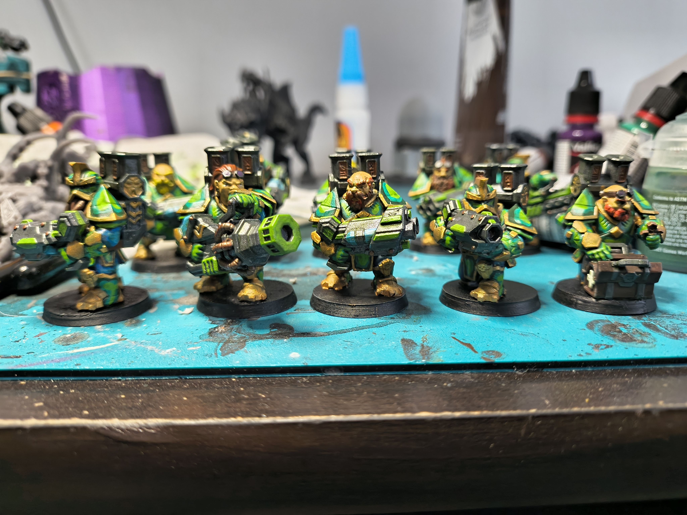

Yesterday's blog was not a blog but was rather buidling my resume page. If you click the link in the navbar for CV it will take you to my current resume. Due to the fact that it is online, I did not include specific information like my home address, or phone number. I think everyone can understand and appreciate why.
Today at work has been challenging. The issue involves managerial duties, which is something I've been concerned about since becoming a manager. I prefer people I talk with and my managers to be direct and not mix words. I also want to know all the information of what is going on versus having it pieced out.
As an example, I once had a manager who I was asking for a raise from. He told me flat out, I will put it in for you. When he put in for it he let me know and expressed to me that it was up to the business to approve. I was aware at each step of the way what the status was, and what the wait was. I understood and he expressed that the raise was not guaranteed but let me know where we were in the process.
I also had a manager who I asked for a raise and she said she would look into it. Months went by and I kept following up every few weeks with no updates or information regarding my request. I was convinced she wasn't looking into it, and I was considering leaving for another company. In the long run she ended up getting me the raise I requested, but in an effort to protect the company she didn't want to give up any information that wasn't guaranteed. Which left me feeling un-heard and ignored.
Yesterday, I completed the paint job on a few miniatures for the OPR (One Page Rules) game that I play. I also recevied a new headset that will help me see view the small miniatures via some built in magnifying glass. I'm sure I look great on it, and my wife has already laughed at the abnormally large size it makes my eyes, but I'll be damned if it isn't awesome! The headset has a rechargeable light and is pretty compfortable to wear. The issue I'm having with it is I have shoulder length hair, which causes the headset to slide up slowly as I wear it. It's a small inconvenience, and I'll need to look into something to prevent that from happening.
Hobby wise, I am running into an issue with cheap paint brushes. They all start decently, but then the tips begin to spread out and lose their point as I use them. I clean them thoroughly between each use and paint color, but I still experience the issue with losing that point. When I say losing the point I mean it appears to be fraying, which as I use it more and more causes me to get more than one line when I paint something. I have tried various types of paint brushes and it seems that this happens with all of them, but it's possible that I have just been purchasing cheap ones and I need to move up to another cost/quality level.
It is officially Wednesday and we are looking down the barrel of the weekend now. Katie, my wife, will be going to her family reunion on Saturday with her sister and her sisters kid. I will nto be going because the way that they go about doing things bothers me. There is no plan, and typically for her sister to arrive somewhere on time we have to lie and tell her whatever event we are going to starts 1 to 2 hours earlier than it actually does, otherwise she is 1 to 2 hours late to everything.
Additionally because she has 3 kids who are various ages and levels of rambunctious they have to take two vehicles. That sounds like a good compromise for her tardiness issues, except that her sister wants to do a "caravan". Which basically just makes all parties as late as she is. I'm trying to stay positive, and I don't think relaying the facts is counter to that spirit. It is what it is.
My friend is also leaving tomorrow for a 3 week trip to Bulgaria and Autria. He has asked me and another friend of his to check on his cats while he is out. I only have to check on them Saturday, Sunday, and Monday, and his friend will take care of it from there. That means that both mornings this weekend I will be travelling to the north side from my home in Beaver County to do this favor. His cat's are pretty skittish though and I don't expect to actually see them the entire time.






